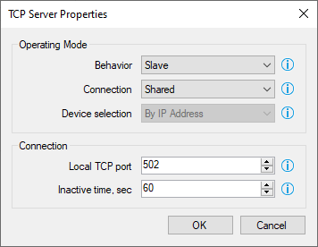
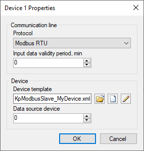

Controlador de Modbus esclavo
Generalidades
El controlador (driver) admite el protocolo estándar de comunicación Modbus (Modbus communication protocol) trabajando como esclavo. Usando este controlador, el Communicator espera solicitudes entrantes y comandos de un dispositivo o de una aplicación de terceros que trabaje como maestro. Se admiten los siguientes canales de comunicación: puerto serie, servidor TCP y UDP. El controlador puede funcionar en modo Modbus RTU o Modbus TCP.
Características del Modbus Slave Driver:
- Recibe datos de un dispositivo mediante comandos de escritura.
- Proporciona datos a un dispositivo en respuesta a comandos de lectura.
- Transmite valores de los canales de entrada de Rapid SCADA recibidos de otros dispositivos a fin de integrarlos con los sistemas de terceros.
Instalación
El Modbus Slave Driver se instala de acuerdo con la secuencia general de instalación de controladores de Communicator (the general sequence of installing Communicator drivers). El archivo en la librería de controladores es KpModbusSlave.dll.
Configuración
En primer lugar, cree una nueva línea de comunicación y un nuevo dispositivo en la base de datos de configuración, así como en la configuración del Communicator. Para este propósito, se recomienda utilizar los asistentes que se abren con los botones  y
y  . La dirección del dispositivo es importante, porque es la ID del elemento que Communicator reconoce para responderle. Luego abra los parámetros principales de la línea de comunicación, seleccione el tipo de canal de comunicación y configure sus propiedades. A continuación se muestran ejemplos de propiedades del canal de comunicación:
. La dirección del dispositivo es importante, porque es la ID del elemento que Communicator reconoce para responderle. Luego abra los parámetros principales de la línea de comunicación, seleccione el tipo de canal de comunicación y configure sus propiedades. A continuación se muestran ejemplos de propiedades del canal de comunicación:


Después de crear un dispositivo en Communicator, abra el formulario de propiedades del dispositivo y configure el dispositivo.

El período de validez de los datos de entrada (Input data validity period) permite establecer automáticamente el estado hasta entonces indefinido, de las etiquetas de entrada del dispositivo cuando no se reciben datos nuevos del dispositivo dentro de un tiempo especificado.
La plantilla de dispositivo (Device template) define el mapa de registros Modbus. Las plantillas de dispositivo de los controladores KpModbus.dll y KpModbusSlave.dll son totalmente compatibles.
El dispositivo de origen de los datos (Data source device) se establece en un valor distinto de cero, para transmitir los valores de los canales de entrada recibidos desde otro dispositivo hacia un sistema de terceros. Si el controlador se utiliza para interactuar con un dispositivo real, el parámetro debe ser 0.
La siguiente figura muestra el editor de plantillas Modbus:

El Modbus Slave Driver requiere ser registrado. Después de completar la configuración, suba el proyecto al Servidor usando el botón  . Luego abra la página de Controladores (Drivers) en la aplicación Administrator, seleccione el controlador KpModbusSlave.dll, abra el formulario de sus propiedades y regístrelo. Después del registro, vuelva a subir el proyecto al Servidor.
. Luego abra la página de Controladores (Drivers) en la aplicación Administrator, seleccione el controlador KpModbusSlave.dll, abra el formulario de sus propiedades y regístrelo. Después del registro, vuelva a subir el proyecto al Servidor.